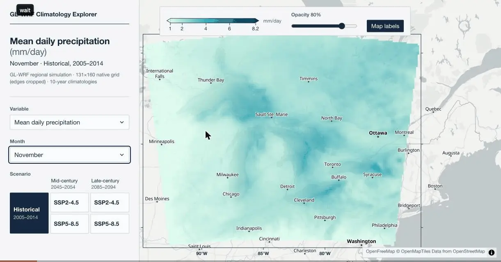
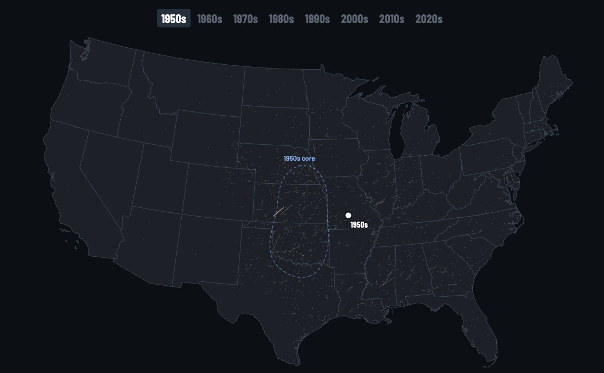

GLWRF Climatology DashboardCheck it out
Viewer for aggregate output of CIGLR's Great Lakes Regional Climate model data. Historical ERA5 data with CMIP6 Pseudo-Global Warming Deltas downscaled with WRF to 10km grid.
HELLO, I'M
Data Scientist, Software Developer, Meteorology & Climate Scientist
Atmospheric Research Scientist at the Cooperative Institute for Great Lakes Research. M.S. in Computer Science from the University of Michigan, concentrating in AI systems and advanced analytical methods. Experienced in regional climate modeling, data pipelines, web development, AI/ML, and more.

Viewer for aggregate output of CIGLR's Great Lakes Regional Climate model data. Historical ERA5 data with CMIP6 Pseudo-Global Warming Deltas downscaled with WRF to 10km grid.
Interactive sandbox experience using multiple color and depth sensors to display a wildfire simulation over terrain formed by the user. Expanded SimFIRE, a MITRE-developed wildfire simulation, to receive user input on terrain, vegetation, and real-time mitigation techniques.

Interactive data-driven article that explains trends in American tornado activity over time. Highlights the shifts in activity towards the Southeast and potential human impacts of climate change.
Compiled and ran a fully-coupled configuration of WRF and FVCOM 3-D lake model through OASIS3 coupler to increase model skill in lake-atmosphere boundary interactions. Created repository for the COMPASS-GLM research group to enable maintenance and reproducibility.
LSTM-based Recurrent Neural Network trained on GHCNd sub-daily station data in Southeast Michigan. For point-based Snow Depth predictions, achieved 0.1435 inch Mean Absolute Error on all datapoints and 0.6818 inch MAE on non-zero points against historical observations.
Implemented and evaluated performance of multimodal prefix caching for Llama 4 Scout to reduce inference latency. Cached and reused the expensive encoder outputs of text, image, audio, and video inputs to eliminate redundant preprocessing.
Generative Adversarial Network (GAN) predicting the chromatic channels (A and B) of the LAB color space from black-and-white images. Utilized a 14-layer U-Net generator and a CNN-based patch discriminator. Trained on 128x128 dataset and tested on iconic sports images.
Compiled a dataset of all 1081 Callahan and Donovan Videos found on Ultiworld's annual playlists from 2012 onwards. Scraped video music cards and descriptions to get songs used and total views.